Role: Product Designer
Timeline: 5 Weeks
Team: 1 Designer, 6 Engineers, 1 Product Manager
BitGo serves institutions, helping them custody their digital assets securely and providing services where they can then deploy their capital. These institutions custody billions of dollars with BitGo and often move these funds to many different places for a variety of reasons, such as end of day settlements.
Help users move more funds, faster.
There isn’t a scalable way for users to initiate multiple transactions at once. Withdrawals had to be initiated one by one, making it incredibly tedious and time consuming to run day to day operations. The more transactions there were to process, the more frustrating it became.
How might we initiate hundreds of transactions as if it was only one?
The solution was very ambiguous and we had no idea how to even begin tackling it, so we started by sitting down with users to get an understanding of how they’re currently processing multiple transactions. We wanted to know how users kept track of the transactions that needed to be processed, how many transactions they’re typically processing, and identify patterns (if any) in the amount, origin, and destination of their transactions.
Key findings:
Once we synthesized these findings, the solution quickly became clear. To get alignment, we mapped out the ideal flow and shared it with engineering to see if it would be feasible. We worked cross-functionally to settle on an MVP flow that would deliver value in the short-term while still keeping the north star flow in our back pockets for future iterations.
MVP user flow
This project went through two releases, the first shipping the MVP and the second with improvements. Throughout both releases, I followed a highly collaborative process. I worked closely with my cross-functional partners and sought out feedback often and early.
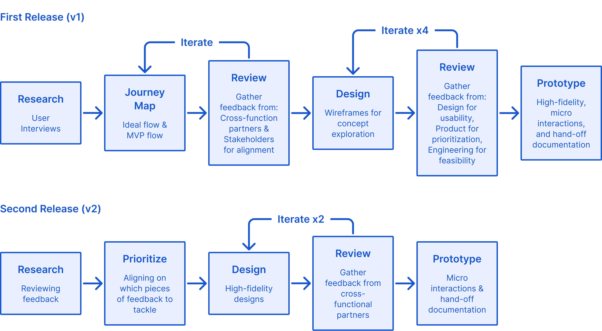The process for both releases of this feature
The solution is broken down into three major steps:
Upload a CSV containing all the transactions, sign and initiate the transactions, and confirm successful bulk transaction.
CSVs can be tricky. To ensure that the user’s CSV will be read and parsed correctly by our system, a CSV template is provided with instructions for correct formatting.
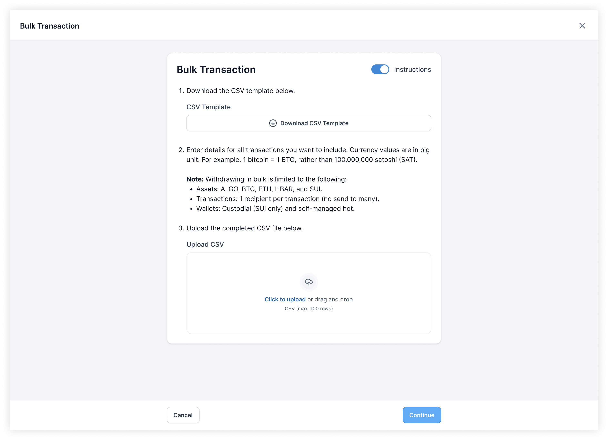CSV template download, instructions, and CSV upload
The experience spans the full screen so that users could have as much real estate as possible to focus on their task. It eliminates distractions and provides more space for information, giving users the confidence that the transactions they are about to initiate were the ones they intended.
The existing pattern that a single withdrawal used was a drawer. At first, to maintain consistency, the bulk transaction experience followed the same pattern. However, we quickly realized that a bulk withdrawal is far more complex and heavy than a singular one, thus having a full screen experience was far more suitable than cramming everything into a drawer.
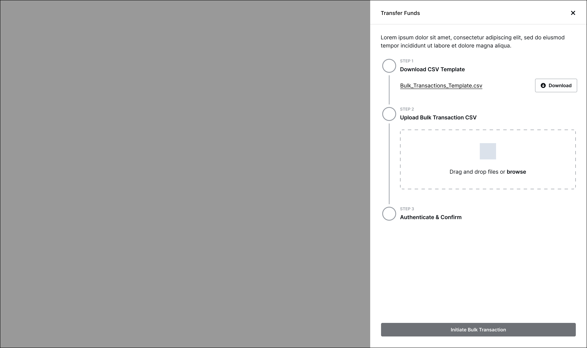Drawer exploration
For a new user, the instructions are incredibly helpful in navigating and learning the new feature. However, for an expert user, it would be a distraction. As a user becomes more familiar with bulk transactions, they can choose to hide the instructions so that they can just get right into their task.
Instructions that can be toggled on or off
When working in bulk and at scale, it’s easy to make mistakes and hard to catch them. Furthermore, there are a lot of things that could go wrong, such as typos, unsupported assets, or overspending etc. Specific and detailed error messages with clear instructions on how to correct the errors provide users with a clear path forward.
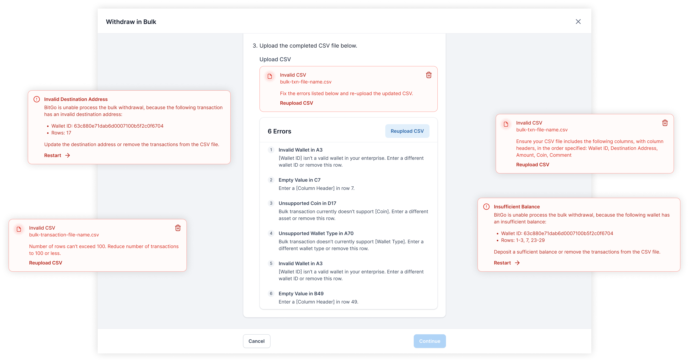All the different errors that could occur during a bulk transaction
If the list of errors is long, the header containing the call-to-action (CTA) is sticky to remain accessible to the user. No matter where they are in the list, they won’t have to scroll to find the CTA to move forward.
Always accessible CTA
There were deep explorations of fixing errors directly in the product rather than having the user go back into excel/sheets to fix the errors and then re-upload the CSV. While that would have been a better user experience, after syncing with Product, the reward didn’t justify the effort, especially for an edge case.
Fixing CSV errors directly in the product exploration
Once the CSV has been uploaded with no errors and users are ready to move forward, the transactions will be processed and built underneath the hood. It only takes a few seconds but it’s an opportunity to incorporate some delight with an animation and inform users that transactions aren’t broadcasted yet; they will have a chance to verify before initiation. Additionally, the feedback reassures users that things are happening.
Transactions processing. Fun fact: this was all prototyped with Figma variables!
In crypto, wallets can be thought of as accounts. Each wallet has a password that encrypts the key needed to sign the transactions from that wallet. How that translates to the experience is that for every wallet a user is transacting out of, they need to input that wallet’s password.
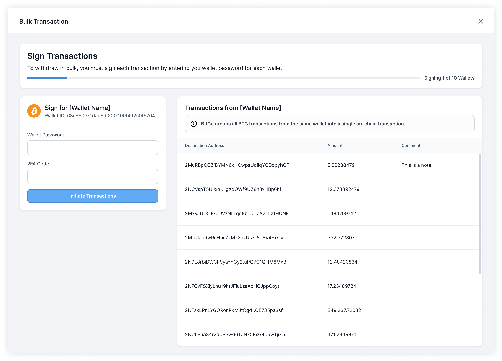Signing transactions, wallet by wallet
As users are about to sign and initiate the transactions from any given wallet, they are given one more opportunity to view and confirm that the transactions that were parsed from the CSV are correct and as intended for that wallet.
Even though the transactions displayed are a direct reflection of the uploaded CSV, a few key design decisions were made to improve scannability:
Left: transaction table before simplification. Right: transaction table after simplification
A different layout where more space was given for transaction verification was explored. However, feedback showed that by having required actions at the bottom of the page, it felt secondary/optional, rather than the primary action. Furthermore, verifying the transactions did not need so much space, especially with how the data was ultimately scoped and simplified.
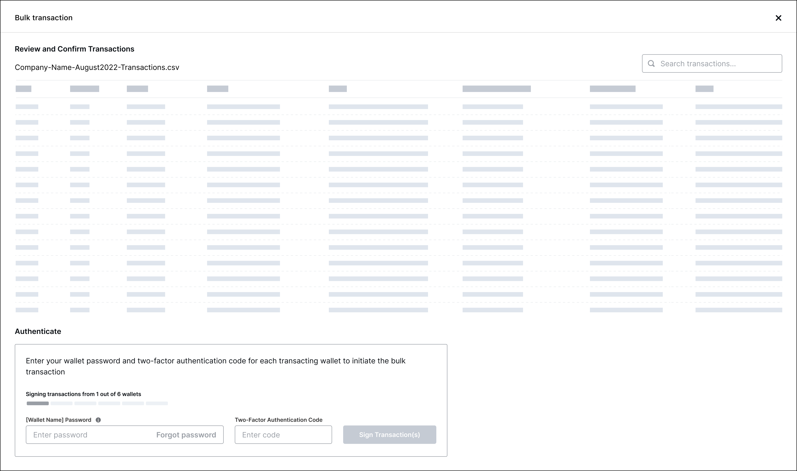After a transaction has been initiated, users typically go to the respective blockchain explorers to verify the transaction on chain. Whenever possible, BitGo will group multiple transactions from the same wallet into one on-chain transaction to save on fees. Users are empowered by this information and can initiate bulk transactions confidently knowing what to expect.
All the different on-chain previews
To help users keep track of multiple transacting wallets, a progress bar informs the user of how many wallet’s transactions have already been signed and initiated. It also shows users how many wallets remain to guide and motivate users through a potentially lengthy process.
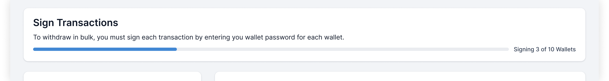Progress bar during transaction signing
Additionally, if users abandon their bulk transaction mid-signing, an exit confirmation modal is used for the following reasons:
Exit bulk transaction confirmation
The progress bar placement in the first release caused a bit of confusion. Feedback indicated that users thought the progress bar was associated to each individual wallet rather than to the entire bulk transaction.
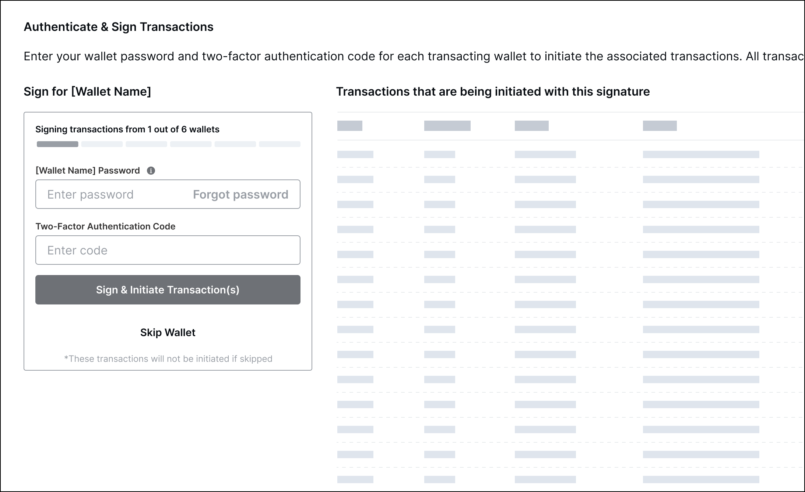Progress bar placement – first release
Following basic Gestalt principles, the progress bar was moved from the wallet signing container to the header to associate it with the entire process rather than the individual wallet.
Once all transactions have been signed and initiated, users receive confirmation that the bulk transaction was successfully processed. Included are finalized details such as total amount withdrawn and the status of each individual transaction.
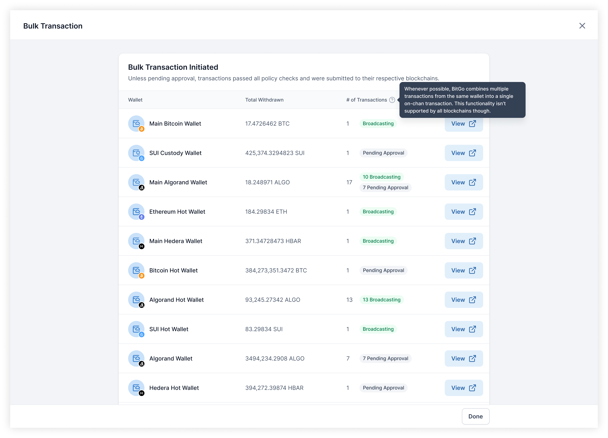Bulk transaction initiated confirmation
While the confirmation page contains only a high level overview of the processed transactions, each transaction has a details page that users can then dig into. Users can easily follow up on each transaction through the link out to the transaction details in a new tab.
Screenshot of the hand-off note left for Engineering calling out to open links in new tabs as well as detailing the link destinations
This was a small but impactful change as in the initial release of this feature, the links to the details would open in the same tab. That results in users only being able to view details for one wallet and have to manually navigate to the other wallets. By opening the details in a new tab, users maintain access to the confirmation page and can use that to better navigate through multiple transaction details.
After the initial release, feedback was received indicating that the confirmation page lacked a critical detail: the transaction status.
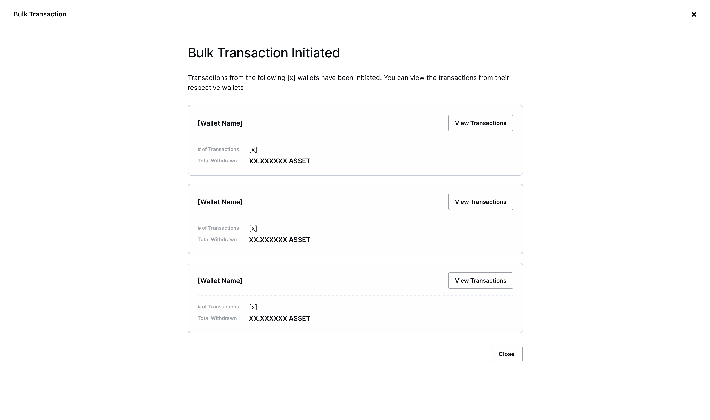Bulk transaction confirmation – first release
For the second release, we added in the transaction status as well as cleaned up the layout to better utilize the space and improve scannability.
Early during ideation, a way to stay updated on the progress as the bulk transaction was processing while being able to still do other tasks on BitGo was explored.
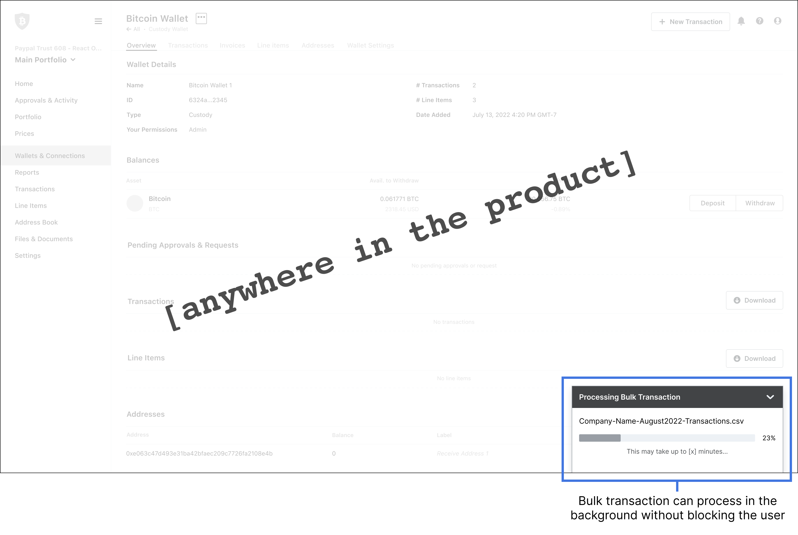AHowever, during a design review with engineering, it became clear that this design was not necessary because two assumptions that I had made were incorrect:
Shipped x2 🚀This feature is used daily by users to process hundreds of transactions, saving them countless hours
Many strategic clients were able to scale their operations with the release of this feature. Through bulk transactions, users are able to initiate hundreds of transactions within minutes. While this feature was built for a specific use case and persona, we saw more usage than we expected due to an unexpected use case: saving on fees. Since transactions are grouped into one on-chain transaction where possible, users only get charged the fee for one transaction rather than multiple.
I’m still not entirely happy with the entry point into the feature. It’s a bit buried/hidden, making the flow awkward because there were concerns that this was more of a power feature. With the data now knowing that all users benefit from this feature, I’d want to revisit that and have the entry point in a more natural place.
For users who are just initiating a handful of transactions to save on fees, a whole CSV may be unnecessary. I’d like to explore other ways to input multiple transactions aside from CSVs so that users can use this feature with less friction.
Two-factor authentication is required along with the wallet password for each transacting wallet. Depending on the user’s 2FA method, it can get pretty annoying. I’d like to open a conversation with the risk team to ideally have a longer time window in which an authentication is valid so that users only have to authenticate once rather than with every wallet.
This project went through a few rounds of iteration, some of which could have been reduced had I better understood how the tech of building and initiating a transaction worked before designing. Luckily, I stated my assumptions and reviewed designs early and often thus catching the major misunderstandings in flows early on without having spent too much time designing.
There were a lot of things I wanted to advocate for, but I learned that with limited time and resourcing, I had to pick my battles and save my breath for the things that I truly felt strongly for and would have the most impact on the user.
Getting to iterate on a feature that I first introduced into the product was a great learning experience. Being able to get to the P1s felt good and it was interesting to see how the feedback evolves. It made me proud to watch the feature grow past the MVP to be more fully fleshed out.